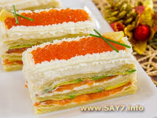

Закусочные пирожные из слоеного теста, форели и авокадо
Предлагаю вашему вниманию яркую праздничную закуску, которая порадует отличным вкусом. Вместо авокадо можно использовать огурец. Из указанного количества ингредиентов получается 4–8 порций.
Ингридиенты:

300 г слоеного теста (дрожжевого или пресного)
200 г слабосоленой форели или семги
200 г творожного сыра (Альметте, Хохланд, Филадельфия)
2 авокадо
4–5 ст.л. икры
сок лимона
Приготовление
Противень смазать маслом или застелить бумагой для выпечки.
Выложить тесто.
Поставить в разогретую до 180 градусов духовку.
Выпекать в течение 10–15 минут.
Остудить.
Форель тонко нарезать.
Авокадо почистить, удалить косточку, тонко нарезать.
Сбрызнуть соком лимона.
Корж смазать творожным сыром (отложить около 3 ст.л. сыра для бортиков).
Выложить форель.
На форель выложить авокадо.
Накрыть вторым коржом.
Смазать сыром, выложить форель и авокадо.
Накрыть третьим коржом.
Смазать сыром.
Разрезать на 4 или 8 частей.
При помощи кондитерского шприца сделать бортики.
Выложить икру.